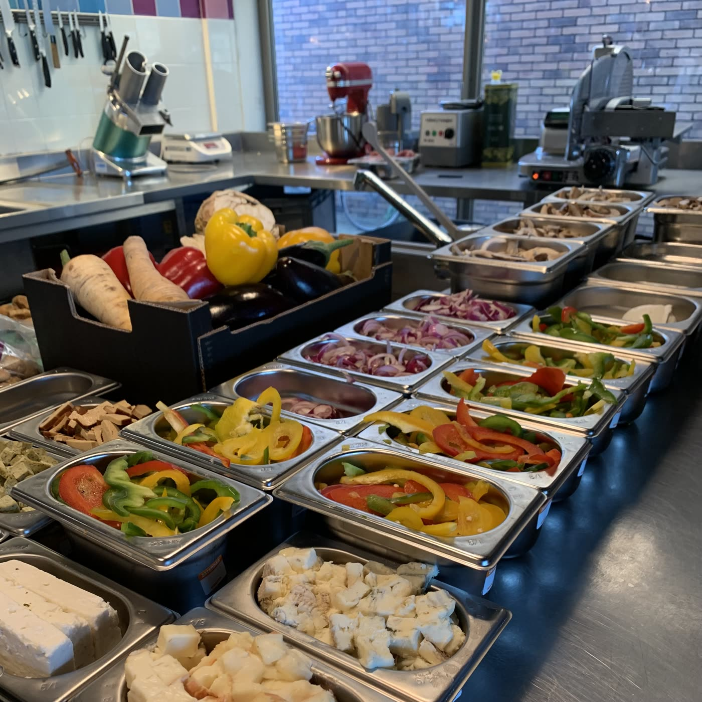
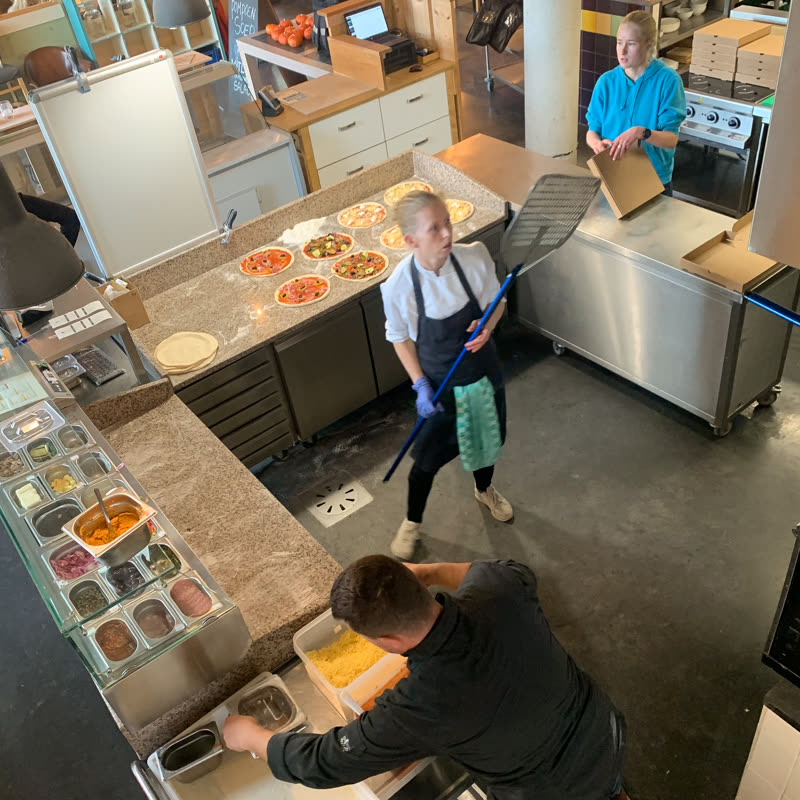
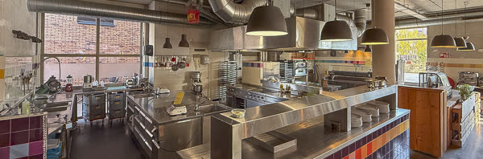
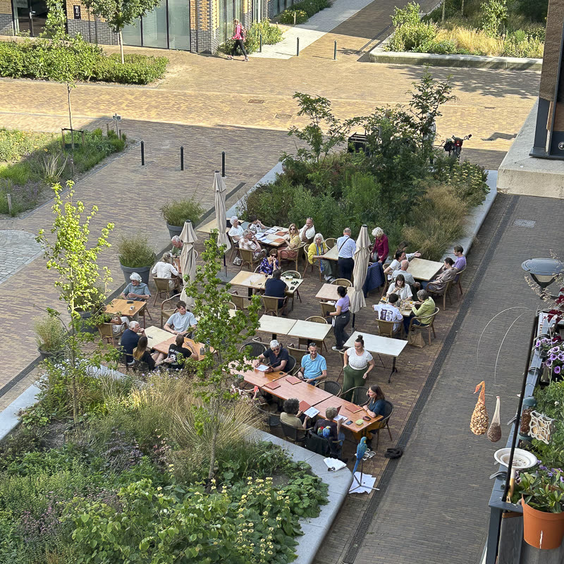
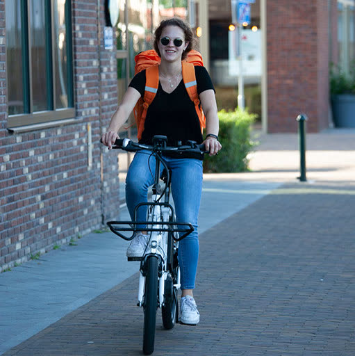
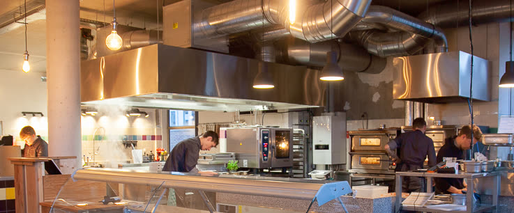

Lekker
We kopen de meest smaakvolle ingrediënten, verwerken die in eigen keuken en bewaren ze onder de meest ideale omstandigheden. En dat proef je.
Groote Bolwerk 45, Zutphen
Pizza, pasta, salades en desserts uit eigen keuken, gemaakt met 100% biologische ingrediënten.
Di t/m zo vanaf 16:00 · keuken tot 20:30
We kopen de meest smaakvolle ingrediënten, verwerken die in eigen keuken en bewaren ze onder de meest ideale omstandigheden. En dat proef je.
Ons eten past in een gezond levenspatroon. Volop groenten, weinig vlees. Geen margarine maar olijfolie, frituren op lage temperatuur, minimale bewerking.
Onze prijzen liggen op een vergelijkbaar niveau met de restaurants om ons heen die niet voor 100% biologisch kiezen.
Onze keuze voor 100% biologische ingrediënten wordt gecontroleerd en gecertificeerd door Stichting EKO-keurmerk. Daardoor mogen wij het EKO-horeca goud-merk gebruiken.
Het grootste deel van onze grondstoffen kopen we bij bedrijven die soms al meer dan 40 jaar biologisch en volgens teeltafspraken werken. Zo zijn we onderdeel van een wereldwijd netwerk van biologisch (organic en deels Demeter) werkende boeren, verwerkers en handelaren.
De meeste producten komen via ODIN, een deel via Udea, sommige rechtstreeks van de boer. Import vooral uit Spanje, Italië en Frankrijk. Twee voorbeelden:
Meer over het keurmerk: Stichting EKO-keurmerk




Bestel vooraf via onze bestelsite. Daar staan alle gerechten met foto, ingrediënten en allergenen. Telefonisch bestellen is niet mogelijk.
Di t/m zo, 16:00 tot 20:30
We doen de pizza pas in de oven als je er bent. Zo neem je hem zo vers mogelijk mee.
Bestel om af te halen
Di t/m zo, bezorging tussen 17:00 en 20:30
We snijden de pizza's niet, omdat de stukken dan onderweg in de doos door elkaar kunnen schuiven.
Bestel om te laten bezorgenBij het bestellen geef je een gewenst tijdstip aan. Daarop reageren we per mail met het tijdstip waarop we verwachten dat de pizza's kunnen worden bezorgd of afgehaald.
Dat tijdstip is een inspanningsverplichting en geen resultaatverplichting: we doen ons uiterste best om op die tijd te leveren. Soms ontstaat er vertraging, omdat er tegelijk veel wordt besteld voor bezorgen, afhalen en het restaurant. We proberen dat in goede banen te leiden, maar we kunnen je niet tussentijds laten weten dat het later wordt, en in de drukte kunnen we klanten niet bellen.
Wil je zo zeker mogelijk zijn van het levermoment? Bestel dan vóór 17:30 of na 19:30.
Net zo lekker: onze diepvriespizza's worden op dezelfde manier gemaakt als de verse pizza, alleen eerder uit de oven gehaald, de rand ingesmeerd met olie en daarna direct ingevroren in de schokvriezer.
Het restaurant is ruim opgezet, met meer dan 90 plaatsen. Reserveren gaat online.
| Maandag | gesloten (voorlopig) |
|---|---|
| Dinsdag t/m zondag | 16:00 – 22:00 |
| Keuken | open tot 20:30 |
| Afhalen | 16:00 – 20:30 |
| Bezorgen | 17:00 – 20:30 |
Voor het komende seizoen hebben we per direct werk voor meerdere mensen op verschillende plekken in het bedrijf.
Bij BioPizza werken ongeveer 15 mensen, veelal in deeltijd. Veel van hen zijn scholier of student, als bijbaan of als werk in hun vrije jaar. Voor een aantal is het hun vaste baan. De meeste medewerkers zijn veelzijdig inzetbaar: afhankelijk van je vaardigheden en wensen kun je op alle fronten aan de slag. Veel kun je leren, de rest is gewoon werken en aanpakken wat er gedaan moet worden.

Algemene voorbereiding voor de avondverkoop: groenten wassen, snijden en grillen, lasagnes, soepen, sauzen en salades maken. De voorraad voor de pizzahoek aanvullen, deeg maken en opbollen. Tijdens de opening maak je de orders klaar voor het restaurant, afhalen en bezorging. Het werk is eenvoudig, maar af en toe stressvol als er veel tegelijk wordt gevraagd.
Werktijden: tussen 14-15 en 21-22 uur
Zeer afwisselend werk, onder andere:
Naast het afwassen bezorg je met de fiets in de buurt van het restaurant. De afwas doe je vooral aan het eind van de dienst, meestal samen met de anderen. Ook help je bij het afmaken en inpakken van de pizza's.
Werktijden: tussen 17 en 22 uur
Interesse? Wil je 3 tot 5 dagen per week werken? Stuur een mail met je motivatie, voorkeur en beschikbaarheid naar info@biopizzazutphen.nl, t.a.v. Frank Loef. Of kom langs tijdens openingstijden.
Voor alle functies geldt m/v of varianten daarop.
Reserveren en bestellen gaan online, niet via de telefoon.